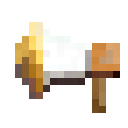
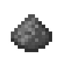
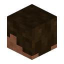

特殊道具
特殊道具提供物品公示、音效、头颅采集和武器选肤功能，使用时按各物品的持握和触发条件操作。
获取
公示喇叭

获取
用 5 个铁锭和 1 个木棍合成，摆放见特殊道具配方。
使用
主手持公示喇叭，副手放要展示的物品。完成约 0.2 秒的使用后，全服聊天显示展示者、物品和数量。物品名称的悬停信息保留。
消耗与冷却
普通模式每次消耗 1 个喇叭，冷却 10 秒。副手展示的物品保留。
哑炮

使用
在工作台用八个火药围住水桶，一次制作八个哑炮并返还空桶，见特殊道具配方。
手持哑炮完成约 0.1 秒的使用后播放点燃音效，冷却 1 秒，普通模式每次消耗 1 个。哑炮作为音效道具使用，对地形与实体无爆炸效果。
头颅采集

使用
主手持精准采集镐，副手持任意原版头颅，对另一名玩家造成直接有效伤害后，消耗副手 1 个头颅并获得目标玩家的头颅。背包放不下时，结果掉落在采集者附近。
一次符合条件的直接攻击即可采集。伤害须由服务端接受，因此受服务器玩家间伤害设置约束。
原初武器
获取
在 /shop 购买原初剑、原初斧、原初镐、原初锄、原初铲或原初矛。默认每份 1 件，初始售价 100 贡献值；以服务器商品目录为准。
选择外观
- 把原初物品放在主手，使用后打开皮肤列表。
- 选择外观并预览，确认后消耗原初物品，获得对应的金质武器或工具。
- 确认后外观定型；预览期间保留原初物品。
强化与命名
原名与定型组件
原初物品以烟火之星为底材。皮肤依据 item_name 选择；铁砧使用 custom_name。强化保留这两类名称及定型状态。
添翼、强化与主题装备
添翼先取得一件胸甲、一只鞘翅和下界合金升级锻造模板，在锻造台按左/中/右槽位放入。可保留胸甲原有附魔等未被结果显式覆盖的组件；胸甲损坏到不能滑翔时需修理。飞行耐久的耐久附魔判定按工具处理，受击按盔甲处理。全部材质和结果见添翼配方。
强化使用升级模板、要强化的基础装备和对应下界合金装备作为锻造输入；附加材料使用完整的下界合金装备。具体性能、材料、槽位与可强化种类逐项列在强化配方。强化状态显示在物品提示中，名称和皮肤不被改写。
变形帽子穿戴后显示外形：用线作模板、配方指定的头部装备作基础、指定外形物品作添加材料在锻造台制作，戴在头部即可显示外形。帽子配方列出所有对应关系。三套主题盔甲的普通款与翼装制作方式不同，请查看主题盔甲配方。
使用条件
| 项目 | 条件 |
|---|---|
| 道具定义 | 使用对应配方产物或商店提供的完整道具 |
| 持握 | 按条目要求安排主手、副手，并完成使用动作或有效攻击 |
| 外观 | 加载与服务器匹配的资源包 |
| 冷却 | 冷却结束后再次使用 |